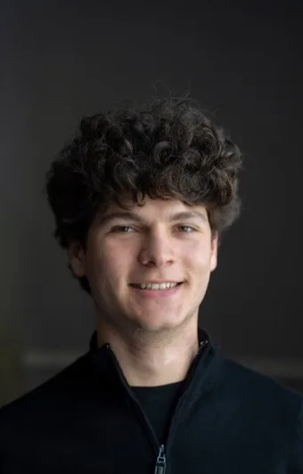

Charles Freidenreich

Business undergraduate, University of San Francisco
cafreidenreich@gmail.com ·
LinkedIn ·
GitHub ·
Instagram
From Los Angeles. Interested in AI and how businesses run. Eagle Scout. I hike and play saxophone.
Now: business operations intern at ABM Industries, and director of external relations for USF's honors program.
Previously: AI bias research at KAIST, LA Unified Student Advisory Council, and BCREM Capital.